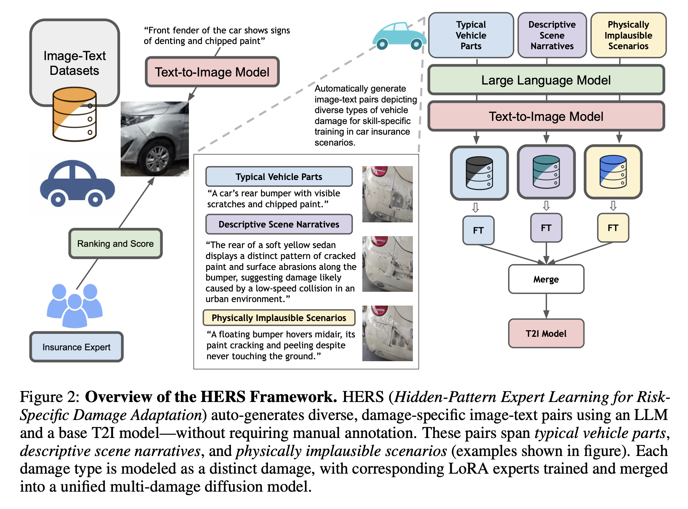
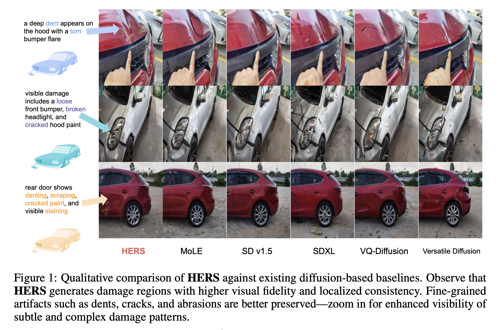
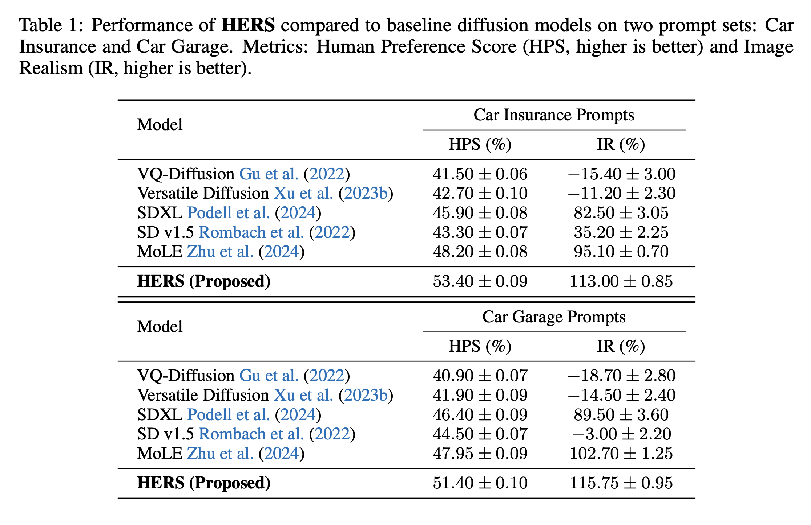
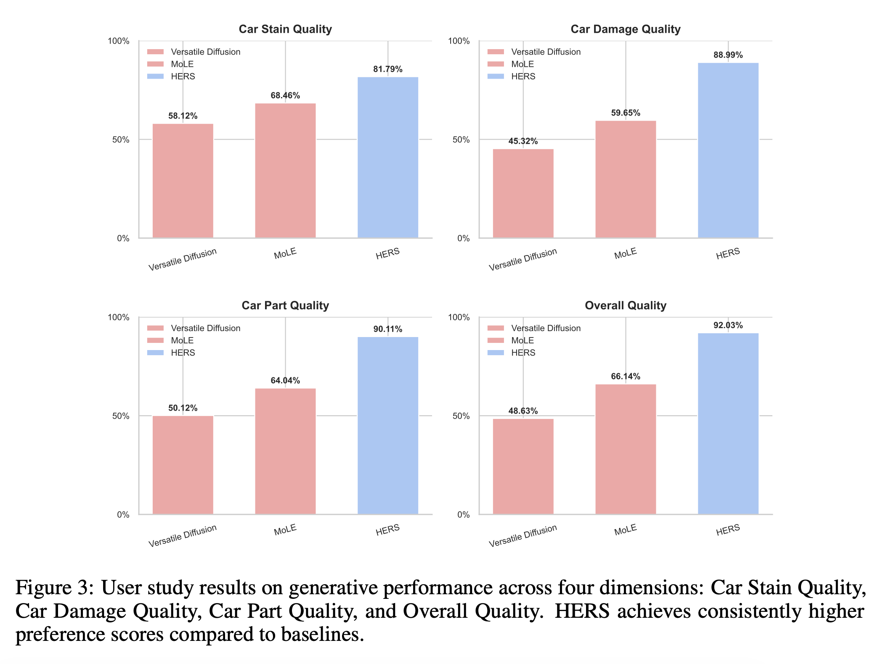
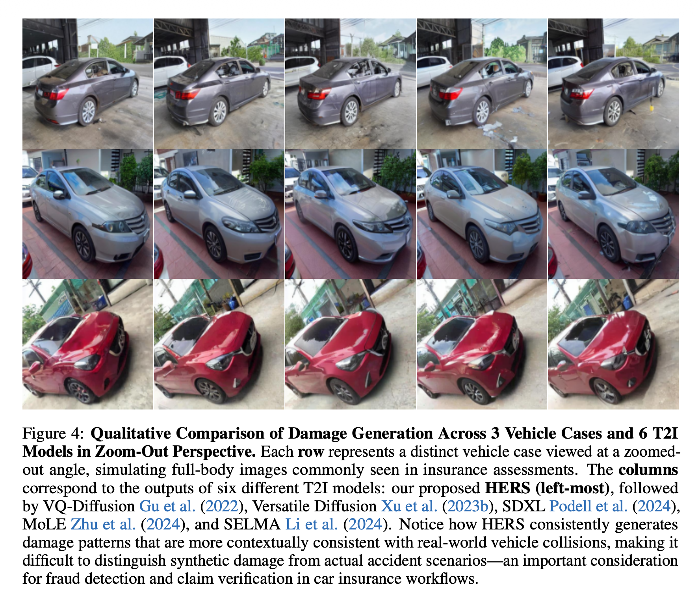

A domain-adaptive diffusion framework for forensically plausible, risk-aware vehicle damage synthesis in auto insurance, fraud detection, and claim verification workflows.

HERS · Generated samples demonstrating forensic damage fidelity across diverse vehicle types
01 · Motivation
Modern diffusion models can synthesize convincing car damage imagery — but in safety-critical domains, surface realism is not enough. Auto insurance workflows demand semantic and forensic precision that generic generative models fundamentally lack.
A single missing crack in synthesized evidence can flip liability decisions, alter claim outcomes, and expose insurers to financial loss.
Misplaced dents and incoherent damage patterns invalidate automated fraud detection systems trained on real-world accident imagery.
Physically implausible damage patterns mislead claim processing pipelines, creating systemic errors at scale across insurance workflows.
Can diffusion models learn the semantic and forensic structure of vehicle damage — not just its appearance?
— Central research question driving HERS02 · Qualitative Comparison
A direct comparison between HERS and strong diffusion-based baselines including SD v1.5, SDXL, MoLE, VQ-Diffusion, and Versatile Diffusion across damage types and vehicle scenarios.

03 · Framework
HERS introduces a fully automated, self-supervised adaptation pipeline — no manual annotation, no inference-time routing overhead. Specialization and generalization are unified in a single merged model.

Step 01
LLM-Driven Prompt Generation
Typical vehicle parts, accident narratives, and physically implausible scenarios to expose failure modes
Step 02
Text-to-Image Synthesis
Base diffusion backbone generates diverse training imagery guided by structured prompts
Step 03
Damage-Specific Expert Learning
Lightweight LoRA expert per damage type — dent, scratch, crack, stain — trained independently
Step 04
Expert Merging
All experts unified into a single model — no routing, no manual labels, zero overhead at inference
04 · Evaluation
HERS is evaluated across four expert-rated dimensions, consistently outperforming all baselines in both perceptual quality and semantic alignment.

Fig 03 · Human Preference Study — four evaluation dimensions

Fig 04 · Full-Body Damage Generation — zoom-out insurance perspective
05 · Risk & Responsibility
HERS is not only a generative improvement — it is a case study in the dual-use nature of domain-specific generative AI. High-fidelity damage synthesis enables powerful applications and simultaneously exposes real risks.
Domain-specific generative models must be paired with domain-specific safeguards.
— HERS paper, Risk & Responsibility section06 · Contributions
Introduce risk-specific diffusion adaptation for auto insurance — the first framework targeting forensic plausibility in addition to visual realism.
Propose HERS, a self-supervised LoRA expert framework requiring no manual annotation and achieving specialization across four damage types within a single unified model.
Demonstrate state-of-the-art performance in text faithfulness, perceptual realism, and human preference across all evaluated damage categories and vehicle scenarios.
Expose the forensic implications of high-fidelity generative models in insurance workflows and argue for domain-specific safeguards as a research priority.
07 · Citation
arXiv Preprint · ICLR 2026 Submission
This research is the product of independent effort and vision, driven by the goal of advancing trustworthy generative AI for real-world, safety-critical systems.
@article{panboonyuen2026hers,
title = {HERS: Hidden-Pattern Expert Learning for
Risk-Specific Vehicle Damage Adaptation
in Diffusion Models},
author = {Panboonyuen, Teerapong},
journal = {arXiv preprint},
year = {2026},
url = {https://kaopanboonyuen.github.io/HERS}
}